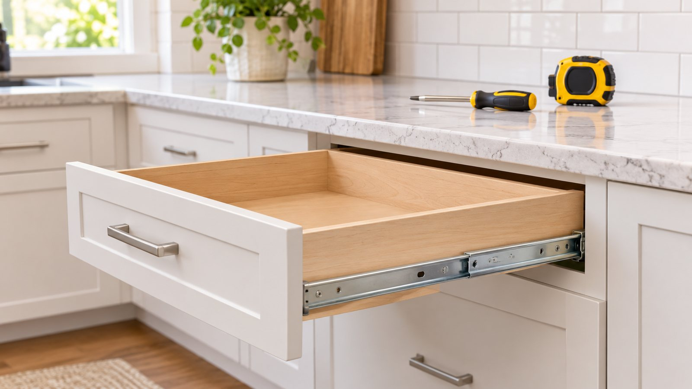
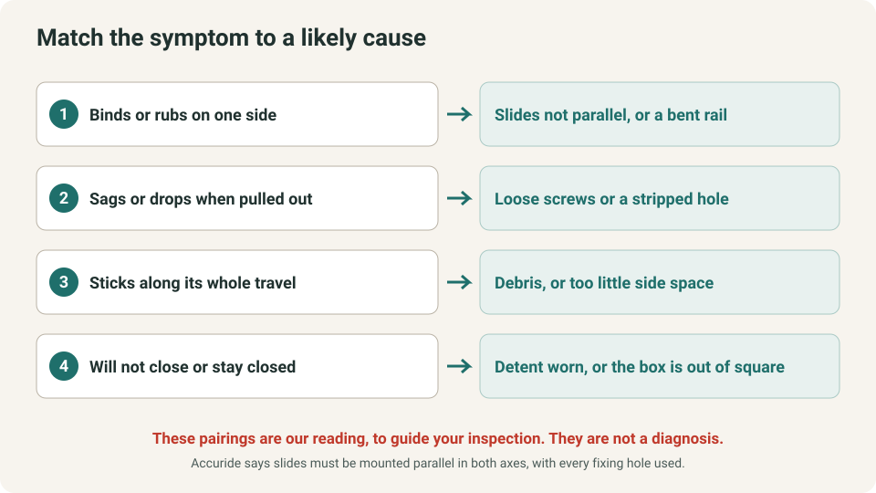
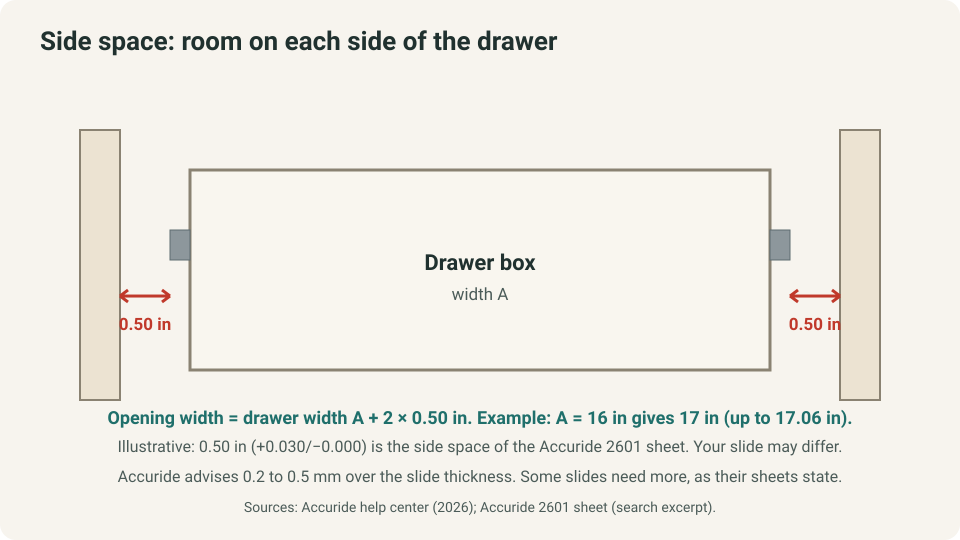
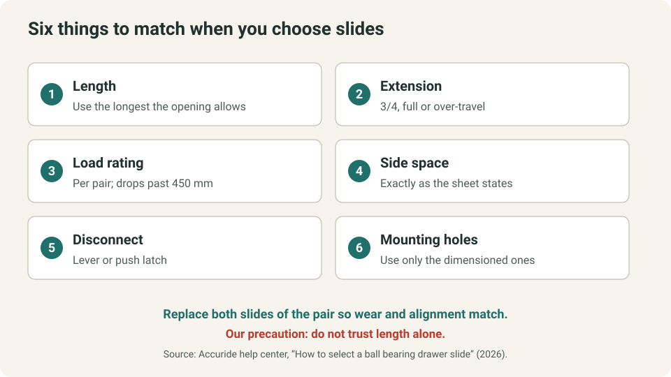

WEEKEND PROJECTS · KITCHEN REPAIR
How to Repair or Replace Kitchen Drawer Slides (Measure First)

A sticking or sagging drawer is often cheaper to fix than to replace, and a replacement that is chosen by length alone usually fails again. This guide uses Accuride’s published selection rules, the guidance of a major slide maker, to show what to check, what to measure and when to stop. It covers side-mounted ball-bearing slides only.
The quick answer
- Inspect before you buy. Look for debris, loose screws, stripped holes, a bent rail or slides that are not parallel.
- Replace in pairs. Accuride’s own guide treats slides as pairs that must be parallel in both axes, with all fixing holes used.
- Measure side space. The slide’s sheet states it, and Accuride calls it critical. Its guide advises 0.2 to 0.5 mm over the slide’s thickness, and some slides need more.
- Match six things. Length, extension, load rating, side space, disconnect type and mounting holes.
Quick plan
| Item | Detail |
|---|---|
| Time | An hour or two per drawer for inspection and measuring; the replacement itself is quick once you have the right pair |
| Tools | Screwdriver, tape measure, camera or phone for photos, pencil |
| Best for | Side-mounted ball-bearing slides on a sound cabinet and drawer box |
| Not for | Undermount or roller slides, which work differently and are not covered here |
Step 1: Match the symptom to a cause
Empty the drawer and watch it open and close. Note whether it binds on one side, sags when pulled out, sticks along its travel or will not stay closed.

These pairings are our own reading, to guide the inspection. They are not from the sources. What the Accuride guide does say is that slides must be mounted parallel to each other in both vertical and horizontal axes, and that every fixing position has to be used to reach the load rating.
Step 2: Identify your slide
Side-mounted ball-bearing slides sit between the drawer side and the cabinet side. Look at the type of release: Accuride describes a lever disconnect, where you release an internal lever and pull the drawer out, and a push latch, where you press a latch and pull the drawer firmly through the resistance of the ball retainer. Some slides have no disconnect at all. The Accuride 2601, for example, is listed as non-disconnect.
Find the maker and model on the slide, or photograph both sides before you remove anything. A different type, such as undermount or roller slides, needs its own instructions.
Step 3: Remove the drawer safely
- Empty the drawer, and support its weight as you pull it out.
- Use the release the maker describes. Do not yank a drawer that may fall.
- Work out which side each part came from, and keep the screws with them.
Do not remove a drawer you cannot support. Ask for help if it is heavy.
Step 4: Clean, tighten and re-check
- Remove debris from the tracks. Accuride says its slides are for indoor use, and that overspray from finishing agents can affect movement.
- Tighten loose screws without stripping the holes. Use every fixing hole the slide’s sheet shows.
- Accuride says that if you clean its slides you can re-lubricate them with a quality grease rated “EP” for extreme pressure. Use only a lubricant your slide’s maker allows.
- Check that the pair is parallel and at the same height on both sides.
If a screw spins without gripping, or a rail is bent, replacement is the safer fix. Our precaution: do not force a longer screw into a stripped hole, because it may reach services behind the cabinet side.
Step 5: Measure the side space

Side space is the room between the drawer side and the cabinet. Accuride’s help center calls it critical for movement and recommends allowing 0.2 to 0.5 mm over the nominal slide thickness. It adds that some slides need more, as their installation guides state.
Worked example (illustrative). The Accuride 2601 sheet lists a side space of 0.50 inch (+0.030/−0.000) and #6 truss head screws. With one slide on each side, the opening must be about 1 inch wider than the drawer box: a 16-inch box wants an opening of 17 inches, and no more than about 17.06. Your slide may differ, so read its own sheet.
Step 6: Choose the replacement

- Length. Accuride measures slide length as the longest dimension of the closed slide, and says to use the maximum length the application allows.
- Extension. 3/4 extension opens about three quarters of the slide’s length, full extension opens the full length, and over-travel opens further.
- Load rating. Accuride rates a pair mounted 450 mm apart, and the rating drops proportionally beyond that length. It says the drawer’s own weight and contents count, and that wider drawers need a higher rating.
- Side space. Exactly as the new slide’s sheet states.
- Disconnect. A lever or a push latch, as above.
- Mounting holes. Accuride says only the dimensioned holes are for mounting; the others are tooling holes.
Accuride also warns that mounting a slide flat under a drawer instead of on its side lowers the load rating by at least 75%, and that not all models can be flat mounted. Do not change the mounting style unless the sheet allows it.
Step 7: Install and test
- Record the old slides’ model and measurements, then remove them and label the sides.
- Repair any damaged cabinet or drawer material before you fit new hardware.
- Fit the cabinet members at the same height on both sides and parallel, at the setback the sheet gives.
- Fit the drawer members, then hang the drawer. For the Accuride sheets we saw excerpted, ball bearing retainers must be fully forward first.
- Run the drawer through its full travel and closing, load it as you will use it, and test again.
If it still sticks, the cabinet may be out of square, the drawer box distorted, or the slides out of parallel.
Quick win (10 minutes)
Empty the drawer and photograph both slide assemblies and the screws. Measure the opening width, the drawer width and the cabinet depth. Those numbers prevent buying slides by apparent length.
Common mistakes
- Replacing one slide instead of the pair.
- Choosing by length alone.
- Forcing a drawer off its release.
- Using a lubricant your maker does not allow.
- Using long screws that may pass through the cabinet side.
- Ignoring a cracked drawer box or cabinet side.
When to call a professional
- The cabinet side is cracked or broken, or the opening is out of square.
- The drawer box is distorted.
- Pipes or wiring may sit behind the cabinet side where screws would go.
- The drawer is heavy and unstable once the slides are off.
FAQ
Can I replace only one slide?
A matching pair is the safer choice. Accuride treats slides as pairs mounted parallel to each other, and wear and alignment can differ between two old slides.
Why does it still stick after I replace the slides?
The cabinet may be out of square, the drawer box distorted, the side space wrong, or the slides out of parallel.
Can I use any slide of the same length?
No. Side space, extension, load rating, disconnect type and mounting holes also matter, and they differ between models.
Should I grease drawer slides?
Accuride says its slides are lubricated for normal life, and that after cleaning you can re-lubricate with a quality “EP” grease. Follow your own slide maker’s instruction.
Does this apply to undermount slides?
No. This guide covers side-mounted ball-bearing slides. Undermount and roller slides use different hardware and instructions, and we did not open those sources.
Can I mount a slide flat under the drawer?
Only if the model’s sheet allows it. Accuride says flat mounting lowers the load rating by at least 75%, and not every model can be flat mounted.
What this guide assumes
It covers side-mounted ball-bearing drawer slides in a typical U.S. kitchen cabinet, using Accuride’s help-center guide as the main source. The Accuride 2601 figures come from a sheet read as a search excerpt and are examples only. The symptom pairings and stripped-hole advice are our own precautions. HomeProjectWise has not repaired these slides, and we do not endorse a brand or product.
Keep going
- How to adjust kitchen cabinet hinges for doors that rub or sag.
- How to fix wobbly furniture for loose screws and joints elsewhere in the home.
- All HomeProjectWise guides for more weekend projects.
Sources and last checked
The Accuride Europe guide was opened and read in full on 15 November 2026. The Model 2601 sheet and product page were read only as search excerpts, so we cite them for the example numbers and nothing more. The guide is from a European arm of the maker, and your own slide’s sheet overrides it.
- Accuride Europe, “How to select a ball bearing drawer slide” (copyright 2026): https://help.accuride-europe.com/knowledge/how-to-select-a-ball-bearing-drawer-slide
- Accuride, Model 2601 technical sheet, hosted by Bossard (search excerpt only, not opened in full): https://americas.bossard.com/content/ProductSpecSheets/ACCRIDE00035_1_2.pdf
- Accuride, 2601 product page (search excerpt only): https://www.accuride.com/en-us/products/drawer-slides/2601-light-duty-slide-with-hold-in-detent